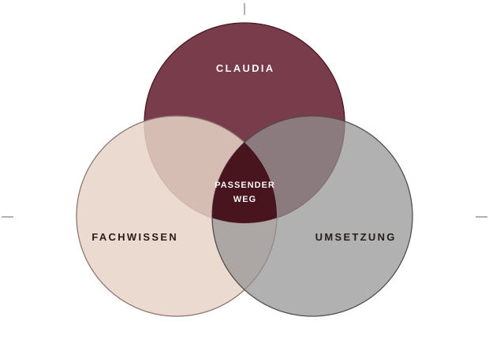

Claudia Effertz
GesundeUnternehmen
Profil ansehenJe nach Anliegen arbeiten Sie mit einzelnen Fachpartnern oder einem zusammengestellten Projektteam. Die Zusammenarbeit kann Claudia Effertz ergänzen oder als eigenständiges Beratungsprojekt erfolgen.
Projekt besprechenEine passende Verbindung entsteht aus Ihrem Anliegen, nicht aus einer festen Besetzung.
Wir besprechen mit Ihnen, welche Erfahrung für Ihr Vorhaben gebraucht wird, wer welche Aufgabe übernimmt und wie die Zusammenarbeit organisiert wird. Die aktuelle Verfügbarkeit einzelner Fachpersonen klären wir für Ihre Anfrage.

Die folgenden Personen wurden auf der bisherigen Website vorgestellt. Ihre aktuellen Schwerpunkte und Verfügbarkeit klären wir im Gespräch, bevor wir eine Zusammenarbeit vorschlagen.
GesundeUnternehmen
Profil ansehenJB-medical
Profil ansehenVitalperspektiven
Profil ansehenJust Functional
Profil ansehenGesundeUnternehmen
Profil ansehenGesundeUnternehmen
Profil ansehenseinundwirken
Profil ansehenCoaching & Ausbildung
Profil ansehensymbicon
Profil ansehenGesundeUnternehmen
Profil ansehenPartnerprofil
Profil ansehenBGM Koordination & Beratung
Profil ansehenWEITBlick
Profil ansehenZ-PM
Profil ansehenSasse Health Solutions
Profil ansehenb.schäfer consult
Profil ansehenPartnerprofil
Profil ansehenBuntes Leben leichter fühlen
Profil ansehenbewegen, beraten, begleiten
Profil ansehenFood Instructor MGU
Profil ansehen